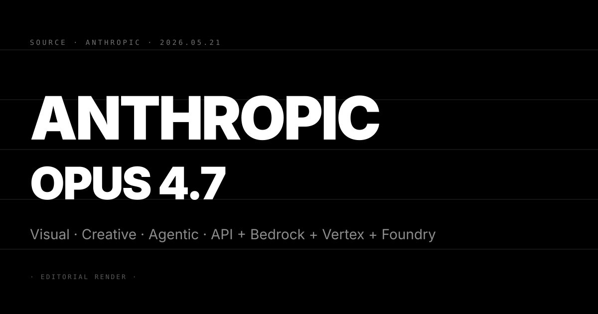
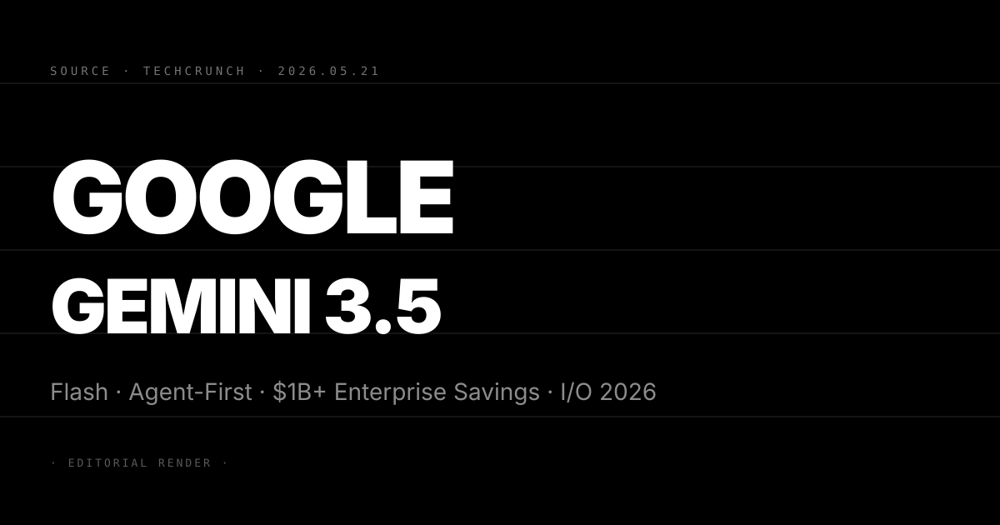
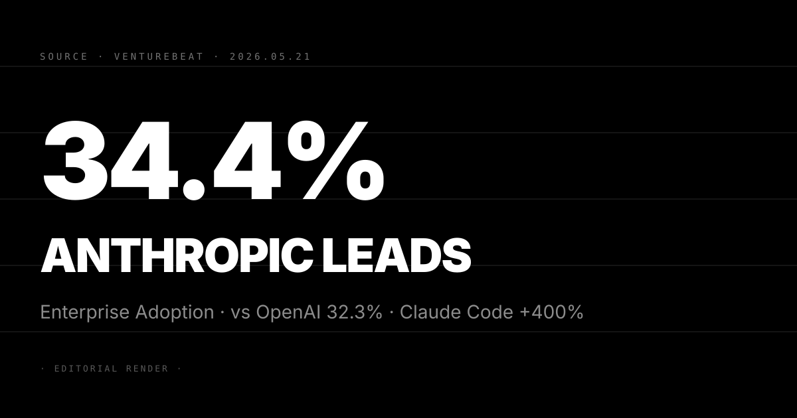
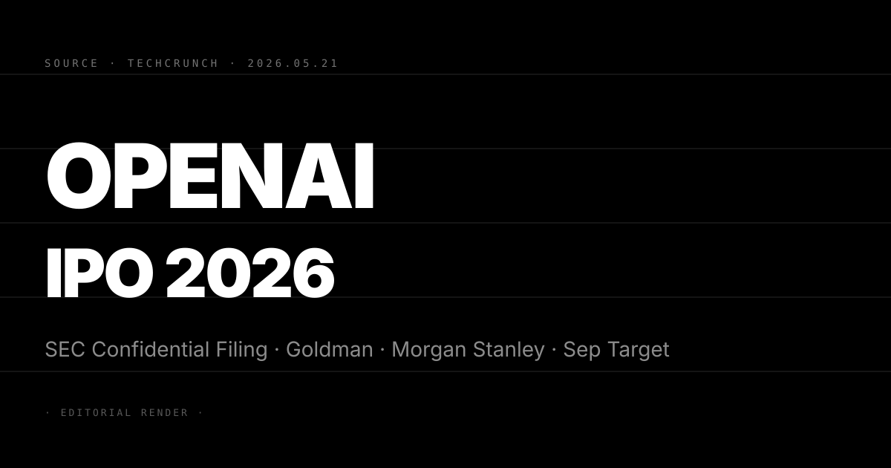

Pin · Anthropic 在旗艦模型路線上升級視覺與創意能力，Microsoft Foundry 首次出現在官方分發管道清單。
Anthropic 5 月 20 日正式發布 Claude Opus 4.7。這是 Claude 4 系列的旗艦版本，主要升級方向集中在視覺理解與創意任務。根據 Anthropic 官方公告，Opus 4.7 在多模態推理、長篇創意寫作與複雜視覺分析上均優於前代 Claude Opus 4.5。
Opus 4.7 即日起可透過 Anthropic API、Amazon Bedrock、Google Cloud Vertex AI 及 Microsoft Azure AI Foundry 四個管道存取。定價按 token 計費，架構延續 Opus 系列傳統。Anthropic 同步開放 Claude.ai 的 Pro 與 Max 訂閱用戶使用。
這次發布的背景值得注意：Anthropic 在五月中旬已大幅提升 Claude Code 的 rate limit，Opus 4.7 的推出配合算力擴充節奏。兩條訊息的時間高度接近，顯示 Anthropic 正在同步推進模型迭代與推論容量部署。
第一，Opus 4.7 的視覺升級直接衝擊 OpenAI GPT-4o 的多模態護城河。OpenAI 在視覺理解上確立先發優勢，但 Anthropic 選擇以旗艦 Opus 系列正面回應，而非以中階模型切入。這個定位選擇透露 Anthropic 的判斷：視覺能力是 2026 年企業採購決策的關鍵變數，不能讓給競品。
第二，Microsoft Foundry 首度出現在 Anthropic 的官方分發管道。過去 Anthropic 主要在 AWS 與 Google 生態系布局，Azure 一直是 OpenAI 的強力地盤。今天 Opus 4.7 正式進入 Foundry，等於 Microsoft 在「不把籌碼押在單一模型廠商」的戰略下主動開門，也是 Anthropic 第一次在 Azure 生態系建立正式灘頭堡。
第三，Opus 4.7 的發布日期與 Anthropic 企業採用率首超 OpenAI 的數據報導（見 N°99）同在一天。這個時間安排很可能是刻意協調的公關動作。兩條訊息疊加形成「市場領先 + 技術升級」的雙重敘事，媒體效果遠強於單一公告。
三個看點：
(1) Opus 4.7 的第三方 benchmark 數據將在 72 小時內被社群拆解。Anthropic 的公告通常不附完整測試數字，但 HumanEval、MMMU、GPQA 等公開測試台的第三方跑分會在兩至三天內出現。這些數字才是判斷 Opus 4.7 相對於 GPT-4o 與 Gemini Ultra 2 真實位置的客觀依據。在第三方數據出來前，暫緩把 Opus 4.7 定義為「當前最強模型」。
(2) Microsoft Foundry 整合是 Anthropic 企業銷售的結構性突破。過去 Anthropic 在 Microsoft 生態系內的存在感幾乎為零，OpenAI 牢牢壟斷 Azure OpenAI Service。今天 Opus 4.7 進入 Foundry，是 Microsoft 在供應商多元化戰略下的主動選擇。預期 Q3 內 Anthropic 會宣布與 Microsoft 更深層的企業銷售合作，Foundry 整合是先行訊號。
(3) 反方觀點：Opus 4.7 把升級重心放在「視覺與創意」而非「agentic 推理」，可能反映資源分配的取捨壓力。Claude Code 的成長是今天最亮眼的市場故事（N°99），但 Opus 4.7 的能力升級卻不在 agentic 推理方向。這個落差值得追蹤。若 Anthropic 在 Q3 不推出明確的 agentic 能力升級，coding agent 的市場優勢有被 OpenAI Codex agent 侵蝕的風險。

Pin · Google 把模型戰轉換成企業成本戰·Flash 是效率槓桿，不是旗艦挑戰者。
Google 在 I/O 2026 主題演講（5 月 19 日）正式發布 Gemini 3.5 Flash。這是 Gemini 3.5 系列的效率旗艦版本，主打 coding 能力與 agentic 任務執行。Flash 可自主完成包含多步驟規劃、工具呼叫與長程任務執行的工作流程，TechCrunch 報導的核心數字是：Google DeepMind 聲稱 Gemini 3.5 Flash 協助企業節省每年逾 10 億美元的 AI 成本。
這個數字的計算基礎是把 Flash 的 token 定價（顯著低於 Gemini Ultra 2 或 GPT-4o）乘以大規模企業工作負載，再與競品相比的總成本差距。VentureBeat 的同步報導確認 Flash 的 coding agent 能力在部分企業內部測試中優於 GPT-4o mini，在長程任務（24 小時以上不間斷執行）的穩定性也有具體數據支撐。
Gemini 3.5 Flash 即日起可透過 Google AI Studio 與 Vertex AI 存取，同步整合進 Android AI 代理框架。Google 同場還宣布 Gemini Spark（24/7 主動型 Gmail 代理），把 Flash 的後端能力包進消費者介面。
第一，Google 明確放棄「最強模型」的正面競爭，改以「最高效率模型」為主要銷售敘事。這個策略轉向有具體的市場邏輯：OpenAI GPT-4o 與 Anthropic Opus 4.7 在旗艦模型能力上的競爭仍在持續，但企業採購決策越來越看「同等輸出品質下的 token 成本」。Google 選擇在這個維度建立差異化，等於把戰場從 benchmark 移到採購試算表。
第二，10 億美元成本節省的說法需要拆解。這個數字是相對數（與最貴競品相比），而非絕對數（Flash 能替企業省下的真實現金）。但在 B2B 銷售語境下，這個框架極為有效，它讓 CIO 可以用「投資回報率」而非「模型能力」的語言向董事會報告 AI 採購決策。Google 把 Gemini 3.5 Flash 包裝成「預算決策工具」是這次 I/O 最精準的企業定位。
第三，Gemini 3.5 Flash 的 agentic 能力是這次 I/O 最值得追蹤的工程訊號。過去 Google 在 agentic 能力上的公開展示多於實際落地，但今次 TechCrunch 報導有具體的企業測試數據佐證，加上 Android 深度整合，Google 的 agent 策略從「示範」進入「部署」是這次 I/O 的結構性變化。
三個看點：
(1) Gemini 3.5 Flash 的真實企業採用速度將在 Q3 見到具體數字。Google 的 I/O 公告通常有六至十二週的市場啟動期，實際 API 呼叫量與企業合約簽訂速度要到 Q3 財報才會浮現。對 Google 投資人：這次 I/O 的 AI 公告對 Google Cloud 下半年收入的影響，要等到 7 月 Q2 財報電話才能量化。不宜用 I/O 的聲量直接換算為收入。
(2) Flash 與 Gemini Ultra 2 的內部定位衝突值得持續追蹤。Google 在旗艦（Ultra 2）與效率（Flash）之間同時主攻企業市場，若 Flash 的成本優勢太明顯，會自我蠶食 Ultra 2 的 enterprise 定價空間。Google 必須在未來兩季說清楚兩個版本的使用場景切割，否則銷售端會出現定價混亂。
(3) 反方觀點：「年省 10 億美元」目前是行銷數字而非財務數字。這個聲稱需要具體客戶案例（名字、規模、節省比率）來驗證，目前 Google 尚未公開任何支撐這個數字的第三方審計或可具名案例。對企業採購決策者：要求 Google 提供可驗證的節省案例，不要把 10 億美元的宣稱當作採購依據。

Pin · 市佔率首次反轉·Claude Code 是真正的驅動器，不是品牌效應。
VentureBeat 5 月 20 日引用 Menlo Ventures 最新調查數據，顯示 Anthropic 在美國企業 AI 採用率首度超越 OpenAI：Anthropic 34.4%，OpenAI 32.3%，差距 2.1 個百分點。這是 Anthropic 自 2021 年成立以來首次在企業端取得市場領先位置。
驅動這個反轉的核心數據是 Claude Code 的成長曲線。VentureBeat 報導引述 Anthropic 內部數字：Claude Code 是 Anthropic 史上成長最快的產品，六個月內企業用戶數成長超過 400%，月活躍用戶數超過 40 萬人。這個規模在 AI coding agent 類別中僅次於 GitHub Copilot，但成長速度快出一個數量級。
Menlo Ventures 的調查同時揭露三個對 Anthropic 形成威脅的競爭訊號。其一，Google 在大型企業（2000 人以上）的滲透率提升快於 Anthropic，主要靠 Google Workspace 深度整合效應。其二，OpenAI 正在推進 GPT-4o mini 的大規模降價攻勢，對中小企業客戶的吸引力增強。其三，開源模型（Llama 4、Mistral）在企業部署比率從 Q4 2025 的 18% 提升到 Q1 2026 的 27%，壓縮閉源模型的整體市場規模。
第一，企業採用率反轉對 Anthropic 的下一輪融資是直接利好。Anthropic 上一輪估值 615 億美元（2025 年），下一輪融資傳聞在 Q2 至 Q3 啟動。企業採用率首超 OpenAI 是最具說服力的市場驗證數據，會直接進入 Anthropic 的 fundraising 材料。對二級市場：這條數據應帶動 Anthropic 下輪估值往 800 至 1000 億美元靠攏。
第二，Claude Code 的 400% 六個月成長是 AI coding agent 市場的結構性數據。GitHub Copilot 雖然用戶基數更大，但月活成長率已進入平緩期（Q1 2026 同比 +18%）。Claude Code 的高成長反映開發者在 coding agent 品質感知上正在從 Copilot 往 Claude 遷移。這個遷移一旦超過臨界點，GitHub Copilot 的企業更約週期流失風險就會升高。
第三，三大威脅的結構性分析揭露 Anthropic 的中期脆弱點。Google Workspace 整合效應短期內 Anthropic 無法複製，因為 Anthropic 沒有等同的生產力應用生態。OpenAI 的降價攻勢若持續，中小企業客戶的成本敏感度會逐步侵蝕 Claude 的採用率。開源模型的上升是更深層的威脅，因為它壓縮的是整個閉源模型市場的天花板。
三個看點：
(1) Anthropic 在企業端的護城河是 Claude Code，而非 Claude 模型本身。若企業採用率優勢由 Claude Code 的 coding agent 能力驅動，護城河厚度完全取決於 Claude Code 相對於 Cursor、GitHub Copilot、Cline 的持續領先。Q3 有被 OpenAI Codex agent 整合進 ChatGPT 前端侵蝕的風險（見 5/18 N°95）。
(2) 2.1 個百分點的領先不是安全邊際。企業採用率調查的誤差通常在 ±3%，意味 Anthropic 的領先在統計上可能不顯著。Anthropic 需要在下一季把領先幅度擴大到 5 個百分點以上，才能確認是結構性轉移而非短期波動。對 Anthropic：在 Q3 融資前，必須追加能讓領先明確化的銷售策略。
(3) 反方觀點：Menlo Ventures 的調查數據可能帶有樣本偏差。Menlo Ventures 本身是 Anthropic 的早期投資人，調查對象若集中在其投資組合企業或矽谷科技圈，結果不能直接推論到全美企業採購決策的代表性樣本。對讀者：把這條數據視為方向性訊號，等待第三方（如 Gartner、IDC）的獨立調查交叉驗證。

Pin · Musk 官司禁制令被駁回·OpenAI 進入 IPO 最後直線衝刺。
TechCrunch 5 月 20 日報導，OpenAI 正在快速推進 IPO 計畫，最快可能在 2026 年 9 月向美國證券交易委員會（SEC）機密申報（confidential filing）。Goldman Sachs 與 Morgan Stanley 已確認出任主承銷商，這是 OpenAI 在 IPO 流程上第一次把投資銀行角色正式化。
這波推進的背景是 Elon Musk 對 OpenAI 的訴訟在 5 月初正式告一段落。法院駁回 Musk 要求阻止 OpenAI 轉為營利公司的禁制令申請，法律障礙解除後，OpenAI 執行長 Sam Altman 在內部加速 IPO 時間表。TechCrunch 的報導指出，OpenAI 的目標是在 2026 年底完成 IPO，九月的機密申報是這個時間表的關鍵里程碑。
OpenAI 目前的估值在最近一輪二級市場交易中落在 3000 億美元區間。Goldman Sachs 與 Morgan Stanley 的任務是在正式路演前把這個數字轉化為可供公開市場接受的估值框架，包括收入倍數、成長率、以及與 Microsoft 的合作關係在財報中如何呈現。
第一，OpenAI IPO 會改寫整個 AI 行業的資本邏輯。一旦 OpenAI 上市，公開市場的 AI 估值倍數會成為衡量所有未上市 AI 公司（包括 Anthropic、xAI、Mistral）的新基準。若 OpenAI 以 2500 億美元以上市值上市，會替 Anthropic 的下輪估值提供向上空間。若上市後股價大幅低於私市估值，會引發整個 AI 私市估值的重新定價。
第二，機密申報給 OpenAI 六個月的迴旋空間。機密申報後，OpenAI 可以在 S-1 正式公開前修正財務數字與風險揭露，這個彈性對估值 3000 億美元、商業模式仍在快速演化的公司非常重要。市場真正看到完整財務數據的時間點是 S-1 公開，大約在 IPO 路演前三至四週，預計最早 2026 年 10 月至 11 月。
第三，Microsoft 與 OpenAI 的財報整合問題是 IPO 最大的結構性未知數。Microsoft 在 OpenAI 估值中持有大量入場前股份，且雙方有複雜的 Azure 容量與 API 獨家協議。這些協議在 IPO 後如何在 SEC 揭露文件中呈現，是投資銀行面對的最複雜問題。預期 S-1 會把 Microsoft 協議的重要性最小化，以維持 OpenAI 的獨立估值敘事。
三個看點：
(1) 九月機密申報是樂觀情境，年底前完成 IPO 需要多條線同時順利。現實情境是機密申報可能延到 Q4，正式 IPO 在 2027 年 Q1 至 Q2 之間。「九月 IPO」需要監管流程、投資人路演、與 Microsoft 法律協議三條都順利才能實現。對投資人：把 2026 年 IPO 當作 40% 機率情境，2027 年 IPO 當作 60% 機率情境。
(2) OpenAI 的 IPO 估值上限取決於 ChatGPT 的 ARR 能否向市場說清楚。OpenAI 的收入主要來自 ChatGPT 訂閱與企業合約，但其中有多大比例是可持續的訂閱收入，是 IPO 估值的核心問題。若 ChatGPT 訂閱的 ARR 在 S-1 中呈現為 80 億美元以上，3000 億估值對應的 PS ratio 約 37 倍，在高成長 SaaS 範疇內尚算合理。
(3) 反方觀點：Musk 雖然在禁制令上落敗，但上訴與持續訴訟的可能性仍存。TechCrunch 的報導沒有說 Musk 完全放棄法律行動，只是說禁制令被駁回。若 Musk 在 S-1 公開後再度提起訴訟，會對 IPO 路演造成時間點干擾。對 OpenAI 投資人：把 Musk 訴訟當作持續背景風險而非已完全解決的問題。